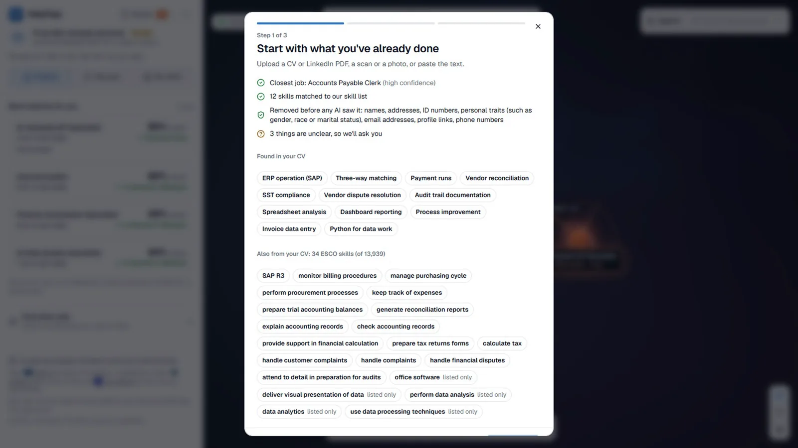
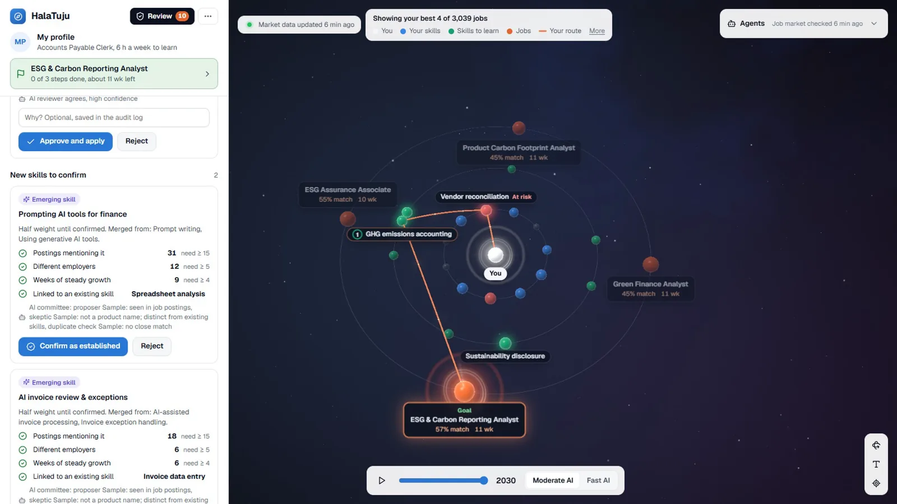
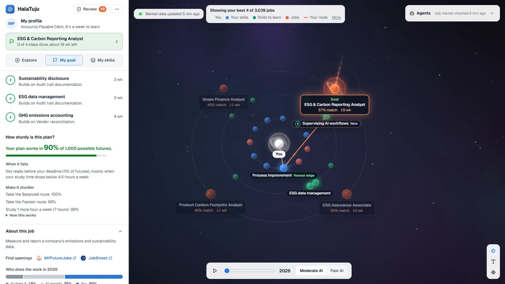
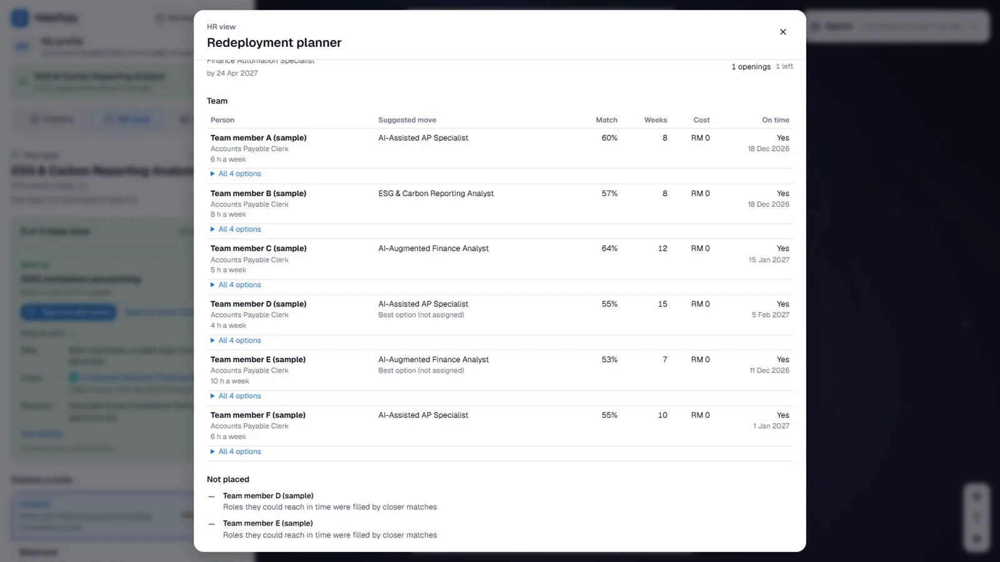

Opening, 10 seconds. “We are Team Dsaise. This is HalaTuju.” The working brand remains HalaTuju, matching the live app and the submitted PDF. The animated route uses the app’s skill colors: blue for existing skills, green for skills to learn, orange for jobs.
THE QUESTION EVERYONE ASKS
Which of my skills will AI change?
Will AI take my job?
How much of it?
What should I learn?
620,000Malaysian jobs highly impacted by AI and digitalisation within 3–5 years
TalentCorp impact study, 2024. The ILO finds that most affected jobs change rather than disappear (WP 140, 2025).
02 / 11
About 27 seconds. TalentCorp estimates 620,000 Malaysian jobs highly impacted by AI and digitalisation within three to five years. The ILO says many affected jobs change rather than disappear. Ask what happens to a worker’s own skills. Source: FINALS-DECK-GUIDE.md slide 2 and the submitted pitch PDF pages 2–3.
THE GAP
Training plans go stale as work changes
56%use AI at work
26%have been trained
01Start a course
02A new tool appears
03The skill shifts
Workers need a plan that can change with the evidence.
Hays Asia Salary Guide 2025, as cited in the SDC Domain 1 brief.
03 / 11
About 20 seconds. The guide cites 56% of Malaysian professionals using AI at work and only 26% having received training. Explain the practical gap: a static course list can be stale before a worker finishes it. The timeline reveals on the next click.
WHAT WE BUILT
One living plan for staying or moving
01
Read your skills
CV or questions. Personal details removed first.
02
Choose a route
Stay AI-ready or move to a new role.
03
Keep it current
Evidence is reviewed; you choose when your route changes.
Sample worker Priya Nair · app screenshot
HalaTuju app and ESCO v1.2.1. The live app contains 3,039 jobs and 13,939 official skills.
04 / 11
About 25 seconds. HalaTuju shows a worker which skills AI may take, offers a stay track or a move track, stress-tests the plan, and updates the route when evidence changes. The screenshot is the actual app, with a labelled sample persona. Source: PDF page 5 and FINALS-DECK-GUIDE.md slide 4.
Run of show: Stay 1:05; Move 1:20; Updated 0:55; For everyone 0:30. Use the live app. Preload Priya’s sample profile and a voted signal. The screenshot is a fallback. Describe any preloaded signal honestly: it was voted live earlier and preloaded to fit the slot. Do not demo unfinished features. Source: FINALS-DECK-GUIDE.md section 5.
EVERY SKILL SCORED
Our model correlates with expert ratings at 0.92
r = 0.919
on 185 jobs held out from training
Correlation, not a prediction of hiring
HalaTuju model
0.919
Simple baseline
0.880
13,939official skills scored from the ESCO taxonomy
Held-out comparison: 185 jobs. Expert task ratings: Eloundou et al., Science 2024; ESCO v1.2.1. Figures from the project evaluation.
06 / 11
About 30 seconds. Official ESCO jobs and skills are the base. A model trained on task ratings estimates skill exposure. On 185 jobs never seen in training, the project reports r = 0.919, versus r = 0.880 for the simple baseline. Do not call this accuracy or imply workplace outcomes. The PDF describes the training pipeline on pages 7–8. Source: README.md model evaluation, FINALS-DECK-GUIDE.md slide 6.
READING PEOPLE PRIVATELY
Current job named in 35 of 36 blind CVs

CV reading in the app · sample worker
35 / 36
current jobs named correctly in a blind synthetic test
Personal details are removed before AI reads the CV.
Blind synthetic CV test, 24 Oct 2026. Privacy retest after fixes: 154 of 155 planted details removed on the same set.
07 / 11
About 28 seconds. The project’s blind synthetic CV test named the current job correctly in 35 of 36 cases. After fixes, 154 of 155 planted personal details were removed on the same dataset, so do not call that a new blind test. The guide’s suggested 20-new-CV retest has not been recorded in the repo. The app screenshot shows the actual CV reading flow. Source: PDF page 10, FINALS-DECK-GUIDE.md slide 7.
THE EVIDENCE LOOP
Three agents vote on each signal
1
ReadNews from 74 trusted sites
2
CheckThe quote must match the page
3
VoteEvidence · skill · sceptic
4
DecideApply, human review, or reject
5
ChooseThe worker keeps or switches route

Reviewer queue · app screenshot
Each decision is logged, sourced, and undoable.
The current vote replay has only one human-labelled signal; no accuracy rate is claimed. Source: eval/VOTES.md.
08 / 11
About 35 seconds. Three roles: evidence checker, skill matcher, sceptic. A matching quote on the source page is checked by code. The vote rule in the guide: two or three yes votes apply; one yes goes to a person; zero yes is rejected. The current replay has only one human-labelled signal, so it cannot establish accuracy. The PDF’s earlier workflow said a person approved every big change; describe the current build on screen accurately. Source: eval/VOTES.md, guide slide 8, PDF pages 15–16.
CI runs on push and pull request, Node 22 and 24. External uptime monitoring and coverage thresholds are not claimed.
09 / 11
About 37 seconds. Data, model, profile, engine, researcher, people. The repo’s GitHub Actions workflow runs typecheck and tests on Node 22 and 24 on pushes and pull requests. AI reads text and evidence; fixed code calculates numeric plans. The guide lists coverage thresholds, boundary checks and uptime monitoring as build items, so do not claim them unless verified on the final build. Source: .github/workflows/ci.yml; PDF pages 6 and 28–29; guide slide 9.
IMPACT AND FEASIBILITY
A six-month pilot is priced at RM 150 per worker
RM 150proposed six-month platform price
versus
RM 22,800estimated statutory severance for an 11-year clerk
SDG 4.4Skills for work
SDG 8.5Decent work
SDG 8.2Productive work
Illustrative economics. The pilot price is an assumption; no employer deal is implied.
Severance estimate: Employment (Termination and Lay-Off Benefits) Regulations 1980 and DOSM 2025 clerical median, as calculated in the project guide.
10 / 11
About 35 seconds. The platform pilot price is an assumption: RM25 per worker per month for six months. The guide calculates statutory severance of about RM22,800 for an 11-year clerk using the DOSM 2025 clerical median. This comparison excludes other training costs and does not prove the pilot has been signed. Explain SDG 4.4, 8.5 and 8.2 in practical terms. The original PDF covers the business model on page 23; the guide refines the impact framing on slide 10.
About 18 seconds. “Priya can see the skills AI may change, choose a route, and decide when new evidence should change it. HalaTuju. When AI changes work, your plan changes with it. Thank you.” End here for the timed pitch. Use the Appendix button for Q&A.
Q&A · ROUTE STRESS TEST
1,000 futures test a plan’s assumptions

Sample route · app screenshot
1,000
simulations vary AI speed, study time, step length and model error.
This tests a plan. It does not predict hiring.
A1 / 3
The simulated futures are a sensitivity test, not a probability of employment. The screenshot shows a sample route working in 90% of the seeded futures under the app’s assumptions. Source: PDF page 14 and guide appendix A4.
Q&A · EVIDENCE
What the current tests show
35 / 36current jobs named in blind synthetic CVs
154 / 155planted details removed after fixes, same test set
r = 0.919held-out model correlation on 185 jobs
1 / 1human-labelled signal in the vote replay; too small to score accuracy
Project README and eval/VOTES.md. These tests use synthetic data or limited samples.
A2 / 3
State limits plainly. The privacy result is after fixes on the same planted-detail set. The agent vote replay has one human-labelled example. The model metric is correlation. The current evaluation does not establish hiring outcomes or demographic fairness. Source: README.md, eval/VOTES.md, guide appendix A11.
Q&A · EMPLOYER USE
Workers choose what to share with HR

Synthetic team · app screenshot
RM 25
proposed employer price per worker per month
A pilot proposal, not a signed customer.
A3 / 3
The HR screenshot is a synthetic sample team. The worker controls sharing; HR makes employment decisions. RM25 per seat per month is a proposed price, not revenue or a signed deal. The PDF has business-model and roadmap detail on pages 17, 22–24.
← → navigate · Space reveals · N notes · Q appendix · F fullscreen